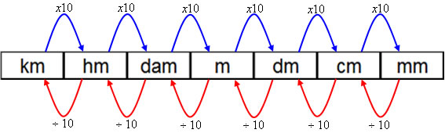

A transformação de unidades de medida de comprimento é baseada na seguinte imagem:
Onde, de acordo com a unidade de origem, deve-se "mover a vírgula" da esquerda para a direita.
Por exemplo, para converter 1,9872 metros em centímetros, a vírgula deve ser "deslocada" 2 casas para a direita, ou seja, multiplicar o número original por 100.
Exemplos:
1,9872 m = 198,72 cm. 5,8 cm = 58 mm. 1 Km = 1000 m.Para realisar o contrário, a vírgula deve ser deslocada para a esquerda, ou seja, deve ser realizada uma divisão.
Exemplos:
198,72 cm = 1,9872 m. 58 mm = 5,8 cm. 1000 mm = 1 m.